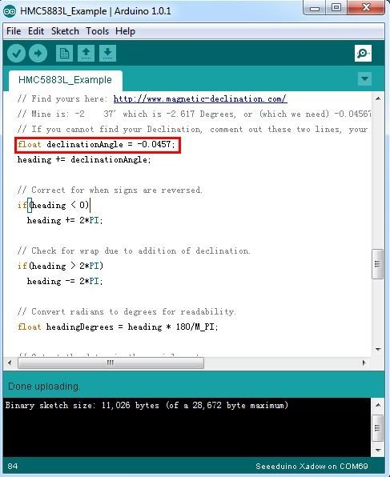
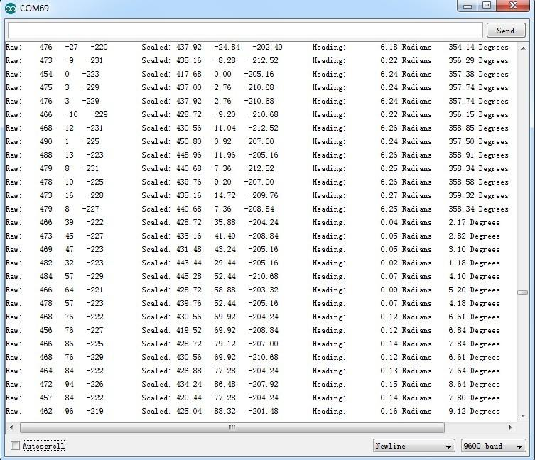

Xadow - Compass
Xadow Compass is a 3-Axis Digital Compass which is a member of Xadow family. The module is based on a low field magnetic sensor HMC5883.
It features 1° to 2° compass heading accuracy, and it is using I2C serial bus to communicate with your microcontroller. Xadow Compass is a useful tool for helping you to get the direction information.
Specification
- Working voltage: 3.3V
- Linearity: 0.1(Max) ±% FS
- Resolution: 10 milli-gauss
- Mag Dynamic Range: ±1 ~ ±8 gauss
- IIC Address:
- 7-bit address: 0x1E
- 8-bit read address: 0x3D
- 8-bit write address: 0x3C
- Operating Temperature: -30 ~ +85 °C
- Dimensions: 25.43mm x 20.35mm
Demonstration
This demo is going to show you how to read raw data, how to calibrate the data with your local magnetic declination angle and how to get heading angle.
Get the local magnetic declination
First off, before any action you are going to take, you need to prepare a parameter you are going to use in your demo. That's your local magnetic declination.
- Then transfer it from degree to radians, and there you get the "declinationAngle". For example, in my case, declinationAngle = -2.617 / （2*π）= -0.0456752665 rad. Three significant figures are enough. So I would shorten it into -0.0456 rad. And this is the parameter you are going to replace the value of "declinationAngle" in the demo code with.
Download code
- Complete the hardware installation:
Note: when connect Xadow Compass to Xadow Main Board, you should concern about the connection direction. The connection method is that the unfilled corner of one Xadow module need to connect to the right angle of another module (see four corners of each Xadow module).
- Download the library file: Digital Compass Library, and install it to your Arduino Library. See How to install Arduino Library to learn the install method.
- Open the demo by the path:File -> Example -> Digital Compass -> HMC5883L_Example. Replace the value of variable "declinationAngle" with the one you've figured out already.

- Upload the Code. Check the output result by opening the serial monitor.

Resources
Copyright (c) 2008-2016 Seeed Development Limited (
www.seeedstudio.com /
www.seeed.cc)
This static html page was created from http://www.seeedstudio.com/wiki